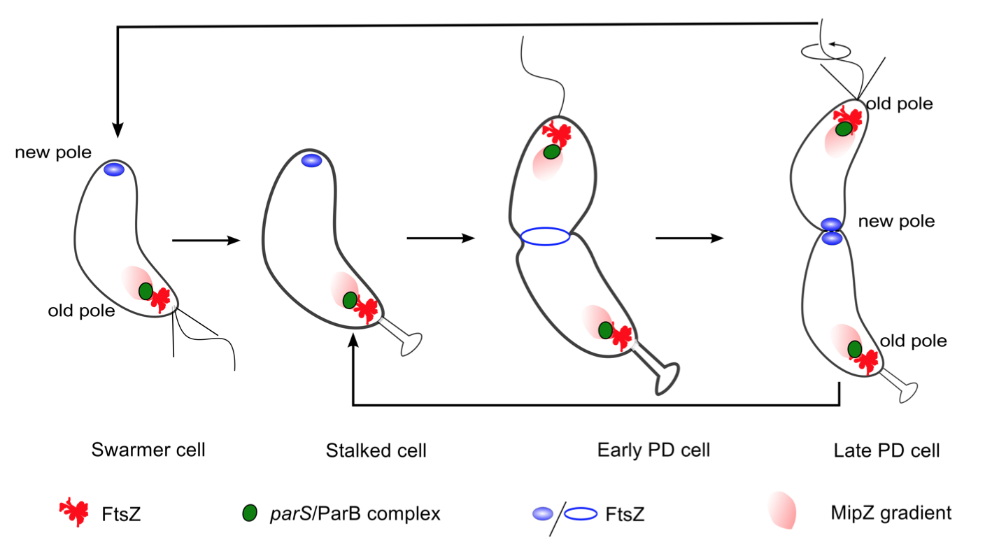
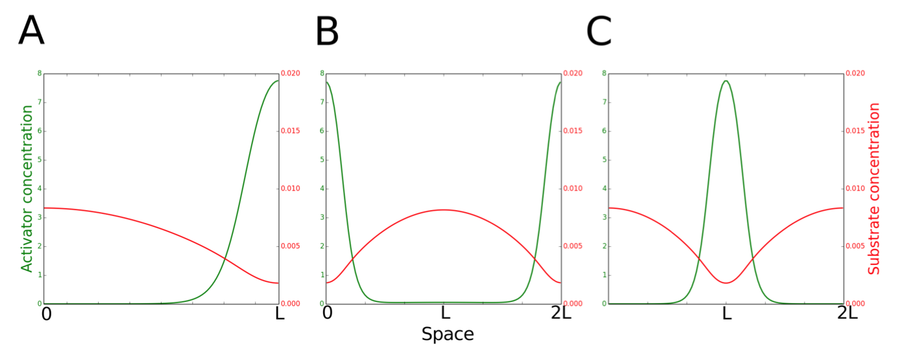
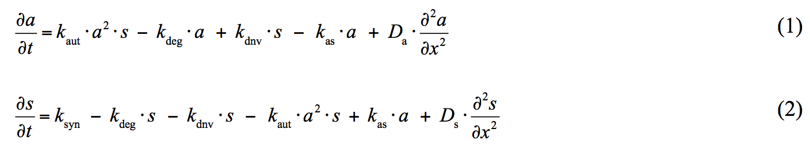
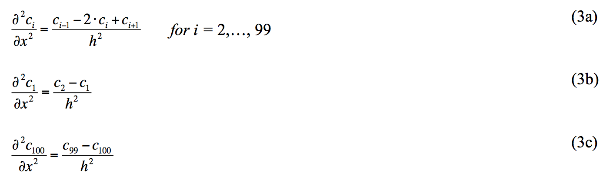
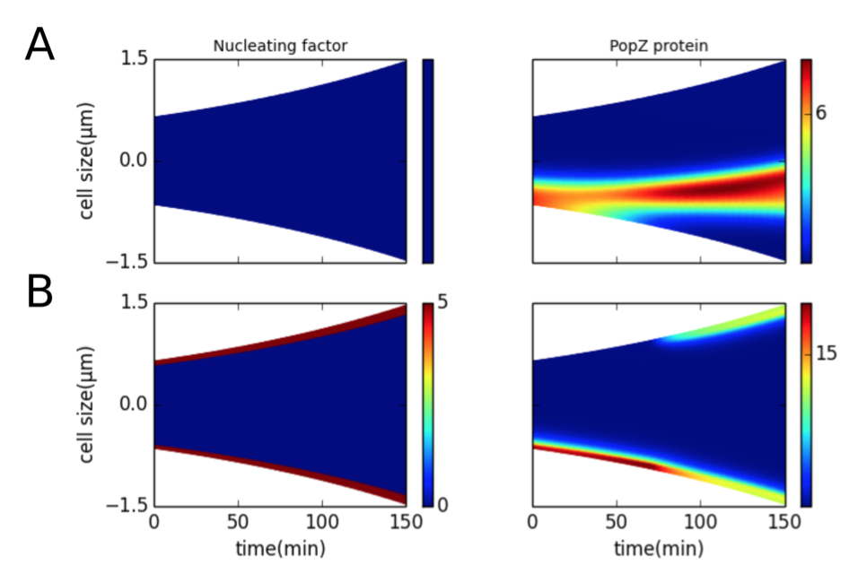
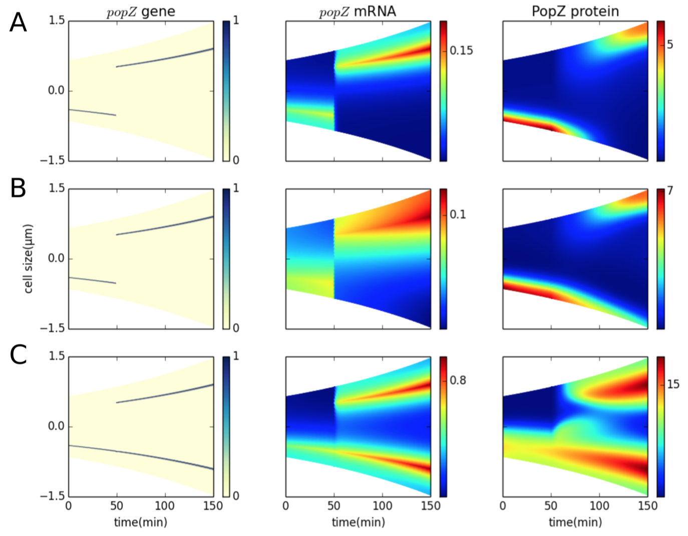

PopZ Localization
Model
Physiology of protein localization in the Caulobacter cell cycle
In Caulobacter crescentus, a model organism for the study of protein localization [1], the polymer PopZ has been identified as a potential landmark protein [2,3]. PopZ localizes to the old pole of newborn cells, and then attains a second zone of polymerization at the new pole in predivisional cells (see Figure 4.1). One function of PopZ is to act as a scaffold tethering segregated chromosomes to the two poles of the cell [4]. As the chromosomes segregate to opposite poles of the cell, the cell division protein FtsZ (a tubulin homologue) polymerizes near the midpoint of the cell, at the future site of cell division. FtsZ polymerization at the correct time and place is a consequence of chromosome segregation. The moving chromosome front carries with it MipZ, a protein that promotes depolymerization of FtsZ [5,6]. As the replicated chromosomes segregate to opposite poles of the cell, the maximum concentration of MipZ localizes to the poles. Hence, the maximum concentration of FtsZ is found at the center of the cell, where MipZ concentration is lowest. Interestingly, the FtsZ peak is very sharp, much sharper than the drop off in MipZ would suggest.

Figure 4.1: Schematic representation of the dynamic localization of poteins during the Caulobacter crescentus cell cycle. PopZ polymer present at the old pole tethers the chromosome by docking the parS-ParB centromeric complex. Later in the cell cycle, PopZ polymer appears at the new pole, where it docks the newly replicated parS-ParB front. MipZ, which co-localizes with ParB, is a negative regulator of FtsZ polymerization. Hence, FtsZ, which promotes cell division, is always found to localize at the position in the cell that has the lowest concentration of MipZ.
While the dynamic localization of PopZ is clearly observed and its role in the cell cycle understood, the mechanism behind PopZ localization is still being investigated and debated. Any one or a combination of these mechanisms may be responsible for new-pole localization of PopZ; or it may be that none of them play a definitive role in PopZ localization. In this paper we argue that PopZ localization may depend on a Turing-type mechanism [7,8] by comparing the predictions of a mathematical model to well established properties of PopZ patterns. We also propose that the sharp FtsZ band at the site of cell division is a consequence of a Turing-type mechanism of self-activating assembly and focusing. Our final model of the PopZ-MipZ-FtsZ interaction network will be formulated as a set of partial differential equations and solved using the Method of Lines (Methods). Simulations of the model reproduce experimentally observed spatiotemporal distributions of these proteins during the cell cycle of wild-type and mutant Caulobacter cells.
Spatiotemporal dynamics of Turing patterns
Turing models are best known for explaining patterns that are periodic in space [7,8]. The theory of Turing patterns predicts that stable, stationary patterns can be generated for a two-species system if two conditions are satisfied: one species must be self-activating and slow diffusing, while the other species must diffuse significantly faster and have an inhibitory effect on the self-activating species. In the Activator-Inhibitor Production (A-IP) version of Turing's mechanism, the initial patch of activator forms by chance, followed by local production of inhibitor molecules, which diffuse rapidly away from the activator patch and inhibit production of activator in the surrounding region [9-11]. At some distance away, the inhibitor concentration is low enough to permit a new zone of activator self-amplified accumulation. An alternative version of the scheme is the Activator-Substrate Depletion (A-SD) mechanism, where a substrate is converted to product by an autocatalytic reaction [10,11]. Local accumulation of the self-activating product depletes surrounding regions of the rapidly diffusing substrate. Only some distance away will substrate concentration be large enough to support a new zone of product accumulation. This critical distance between activator peaks (where inhibitor concentration is low enough or substrate concentration is high enough) is the characteristic wavelength, λ0, of a Turing pattern (Figure 4.2).

Figure 4.2: Two scenarios for the function of PleC (kinase or phosphatase) in the early predivisional (PD) cell. Spatiotemporal dynamics of PleC (green) and DivL (dark blue) during the cell cycle under these two scenarios.
Method
We model Turing patterns in one spatial dimension x, by RDEs for activator concentration a(x,t) and substrate concentration s(x,t):

The "classical Geirer-Meinhardt" equations lack the terms kdnv•s and kas•a, which correspond to de novo synthesis of activator (polymer) from substrate (monomer) and to dissociation of polymer into monomers. We solve the RDEs (1-2) in one spatial dimension, by the method of lines [12]. That is, we discretize the spatial dimension into n compartments (n = 100) of length h = L/n, and approximate it by a central difference scheme (Eq. 3a). We implement no-flux boundary conditions as described in Eq. (3b,c). (In these equations, ci represents the concentration of either activator or substrate in compartment i.)

The resulting 2n+1 ordinary differential equations are solved using MATLAB's ode15s solver.
Results
1. Transient polar localization of a nucleating factor may generate bipolar PopZ patterns

Figure 4.3: Presence of a nucleating factor at the poles can bias PopZ self-assembly at the poles. Color indicates concentration gradients from minimum (blue) to maximum (red). (A) Nucleating factor is present uniformly across the length of the cell during the cell cycle. (B) Nucleating factor is present in five compartments at each pole during the course of the cell cycle.
2. Bipolar patterns of PopZ can be generated in the absence of nucleating factors

Figure 4.4: Unipolar to bipolar transitions in PopZ localization can be realized in the absence of nucleating factors. Color indicates concentration gradients from minimum (blue) to maximum (red). (A) One division cycle (150 min). Left panel: kdnv = 1 min-1; a single PopZ focus forms at the center of the cell. Right panel: kdnv = 12 min-1; a PopZ focus forms at the old end of the cell, and a second focus forms at the new end at t = 100 min. (B) A non-dividing (filamentous) cell. Left panel: kdnv = 1 min-1; PopZ polymers undergo splitting to form a branched pattern as the cell grows. Right panel: kdnv = 1 min-1; new PopZ foci arise de novo as the cell grows.
3. Localization of slow diffusing popZ mRNA suggests that bipolarity requires the presence of two popZ genes

Figure 4.5: Stochastic simulations show that limited dispersal of mRNA produced from a single gene results in unipolar PopZ patterns. One popZ gene is present throughout the cell cycle at a distance of 0.2•Lt from the old pole producing mRNA with a diffusion coefficient of 0.05 μm2min-1. For popZ gene, color indicates presence (blue) or absence (yellow) of the gene. For popZ mRNA and PopZ protein, color indicates concentration gradients from minimum (blue) to maximum (red).

Figure 4.6: Stochastic simulation of the two-gene model. (A) One popZ gene (red) is constantly present at a distance of 0.2•Lt from the old pole, while a second popZ gene (blue) is introduced at t = 50 min. The second popZ gene is translocated across the cell until it reaches a distance of 0.2•Lt from the new pole. popZ mRNA (DmRNA = 0.05 μm2min-1) is produced by both genes. PopZ polymer shows a unipolar-to-bipolar transition at t = 92 min. For popZ gene, color indicates presence (blue) or absence (yellow) of the gene. For popZ mRNA and PopZ protein, color indicates concentration gradients from minimum (blue) to maximum (red). (B) Distribution of the time (left panel) and cell size (right panel) at which popZ gene segregation is completed (green bars) and PopZ becomes bipolar (red bars).
4. The two-gene model of PopZ localization recreates distribution patterns observed in mutant cells

Figure 4.7: The two-gene model can also account for observed PopZ distribution patterns in mutant cells. For popZ gene, color indicates presence (blue) or absence (yellow) of the gene. For popZ mRNA and PopZ protein, color indicates concentration gradients from minimum (blue) to maximum (red). (A) Shifting the position of a single popZ gene from the old pole to the new pole results in a corresponding shift in the polar localization of PopZ polymer (ksyn-mRNA = 2 min-1, DmRNA = 0.05 μm2min-1). (B) Transient bipolar localization of PopZ is observed under mild-overproduction (ksyn-mRNA = 3 min−1) and faster diffusion of mRNA (DmRNA = 0.5 μm2min-1). (C) Overexpression (ksyn-mRNA = 10 min-1) results in PopZ polymerizing further into the cytoplasm.
Chromosome Segregation
Model
Spatiotemporal Model of Chromosome Segregation in Caulobacter crescentus
In recent years, ParABS-mediated chromosomal segregation has been frequently studied in the bacterium Caulobacter crescentus [1-6]. The parS locus is located 8 kb away from the origin of replication [7], which in turn is oriented towards the old (stalked) pole of the Caulobacter cell. The ParB protein binds specifically to the parS sequence forming a centromere-like complex. Chromosome replication results in two copies of the parS/ParB complex. While the old copy is retained at the old pole, the new centromeric complex or 'chromosome front' is translocated to the opposite pole in a matter of minutes [1,4,6]. Fluorescence microscopy experiments demonstrate that the parS/ParB complex follows a retracting cloud of ParA towards the new pole [1,2], suggesting that ParA participates in the segregation of the replicated bacterial chromosome (Figure 5.1).
Figure 5.1: Schematic illustration of the consensus model of chromosome segregation in Caulobacter crescentus. In the swarmer cell, a ParA concentration gradient (pink) extends from a maximum at the new pole to a minimum at the old pole. The parS/ParB chromosome front (green circles) is tethered to the single focus of PopZ (red). Once DNA replication is initiated in the stalked cell, a second copy of the parS/ParB chromosome front translocates behind the receding ParA structure. Concurrent with the completion of segregation in the early predivisional cell, a new focus of PopZ is formed at the new pole to tether the newly replicated chromosome front. TipN (blue circle) is localized at the new pole in the early stages of the cell cycle before being repositioned at mid-cell in the late predivisional stage.
Method
Spatial discretization. The proteins under investigation in this work are distributed heterogeneously along the long axis of a Caulobacter cell. Hence, it is sufficient to consider biochemical reactions and diffusion occurring in one spatial dimension, and to write the governing partial differential equation (PDE) for a generic chemical species C as:

parS/ParB segregation. All variables in our differential equation model have units of concentration. There can be only one or two parS sequences at any given stage of the cell cycle; hence, defining parS in terms of a real number variable S(x,t) is not accessible to our model. Instead, we treat the chromosome sequence parS and the protein ParB as a single polymeric entity. Furthermore, for microscopy experiments reported in literature, ParB is tagged and used as a proxy for parS movement in the cell. Hence, representing the two as single entity reflects the protocol of the experimental observations we are trying to replicate in simulation.

ParA biochemical pathway. Since we desire to investigate parS segregation in both ParA wild-type and mutant backgrounds, a description of ParA's interactions with ParB, DNA and other ParA molecules is important. Figure 5.2 shows the biochemical reactions that form the bases for the equations in our model. The numbers of ParA molecules present in the cell are not sufficient to make up a polymer filament that is long enough to span the long axis of the Caulobacter cell, making it unlikely for the chromosome to be segregated by a ParA filament [4]. Hence, we do not include the ParA polymer species in or model. We desired to simulate three important ParA mutants in our model, namely (i) ParAG16V, which is a dimerization-negative mutant, (ii) ParAR195E, which is deficient in DNA binding, and (iii) ParAD44A, in which the ATPase activity is blocked. For each of these mutants, the rate constant for the corresponding reaction is set to zero.
Figure 5.2: Proposed ParA biochemical cycle ParA monomers (pink) can bind TipN (blue), PopZ (red), or form dimers. ParA dimers bind non- specifically to DNA. The parS/ParB chromosome front (green) has high affinity for DNA-bound ParA dimers. ParB up-regulates the ATPase activity of ParA, resulting in the release of ParA in the form of free monomers.
FtsZ, TipN and MipZ localization dynamics. In our model, MipZ is present in a freely diffusing monomeric form and a parS-bound form that cannot diffuse. FtsZ is represented in both monomeric and polymeric forms. Polymer formation occurs by de novo and autocatalytic growth. The rate of FtsZ depolymerization is a function of total MipZ. The localization of TipN depends indirectly on FtsZ [8]. For simplicity however, we assume TipN directly binds to and co- localizes with FtsZ.
PopZ. In vivo, the PopZ protein assembles into polymeric aggregates that localize at the old pole in swarmer cells and later assumes bipolar distribution [9,10]. New pole localization of PopZ requires DNA replication [11] and chromosome segregation [12]. In earlier work, we formulated a model to show that PopZ localization pattern can be explained based on a Turing mechanism. Further, we proposed that slow diffusion of popZ mRNA makes it necessary for the popZ gene to be present close to both poles for bipolar PopZ localization. The current model does not include popZ genes or mRNA. In this preliminary model, we set the rate of PopZ monomer production to be dependent on the concentration of the parS/ParB focus. As a result, the emergence of a PopZ focus at the new pole coincides with the completion of chromosome segregation.
Results
1. The model is able to reproduce the wild type distribution of ParA, parS/ParB, PopZ and FtsZ.
Figure 5.3: Spatiotemporal distribution of ParA (right panel) and parS/ParB chromosome fronts in wild-type and mutant cells. Colors indicate concentration gradients from minimum (blue) to maximum (red). (A) Wild type, (B) ΔtipN, and (C) ParA overexpression. (D) parAD44A mutants express ParAD44A proteins that cannot be hydrolyzed by ParB. (E) parAG16V mutants express ParAG16V proteins that cannot form dimers. (F) parAR195E mutants express ParAR195E proteins that cannot bind DNA.
2. The model reproduces delays in chromosome segregation and FtsZ mid-cell localization in ΔtipN and ParA overexpression background
Figure 5.4: Spatiotemporal distribution of FtsZ (left panel) and PopZ (right panel) in wild-type and mutant cells. Colors indicate concentration gradients from minimum (blue) to maximum (red). (A) Wild type, (B) ΔtipN, and (C) ParA overexpression. (D) parAD44A mutants express ParAD44A proteins that cannot be hydrolyzed by ParB. (E) parAG16V mutants express ParAG16V proteins that cannot form dimers. (F) parAR195E mutants express ParAR195E proteins that cannot bind DNA.
3. The model reproduces aberrant localization of ParA mutants. PopZ may regulate chromosome segregation via binding ParA dimers instead of ParA monomers.
Figure 5.5: Centromere segregation requires PopZ to interact with the dimeric form of ParA. Colors indicate concentration gradients from minimum (blue) to maximum (red). The time taken for translocating the parS/ParB chromosome front (upper panel), and the ParA distribution profile (lower panel) are comparable between simulations of the (A) wild type strain, and (B) a mutant strain containing a PopZ variant that cannot bind ParA monomer (popZ-SP1). (C) Simulations of a strain containing a PopZ variant that cannot bind ParA dimers (popZ-SP2) shows that the parS/ParB segregation is delayed.
Reference
- PopZ Localization References
- Goley ED, Iniesta AA, Shapiro L (2007) Cell cycle regulation in Caulobacter: location, location, location. J Cell Sci 120: 3501-3507.
- Ebersbach G, Briegel A, Jensen GJ, Jacobs-Wagner C (2008) A self-associating protein critical for chromosome attachment, division, and polar organization in caulobacter. Cell 134: 956-968.
- Bowman GR, Comolli LR, Zhu J, Eckart M, Koenig M, et al. (2008) A polymeric protein anchors the chromosomal origin/ParB complex at a bacterial cell pole. Cell 134: 945-955.
- Bowman GR, Comolli LR, Gaietta GM, Fero M, Hong S-H, et al. (2010) Caulobacter PopZ forms a polar subdomain dictating sequential changes in pole composition and function. Mol Microbiol 76: 173-189.
- Thanbichler M, Shapiro L (2006) MipZ, a spatial regulator coordinating chromosome segregation with cell division in Caulobacter. Cell 126: 147-162.
- Kiekebusch D, Michie KA, Essen LO, Lowe J, Thanbichler M (2012) Localized Dimerization and Nucleoid Binding Drive Gradient Formation by the Bacterial Cell Division Inhibitor MipZ. Mol Cell 46: 245-259.
- Turing AM (1952) The Chemical Basis of Morphogenesis. Philos Trans R Soc B Biol Sci 237: 37-72.
- Kondo S, Miura T (2010) Reaction-diffusion model as a framework for understanding biological pattern formation. Science 329: 1616-1620.
- Gierer A, Meinhardt H (1972) A theory of biological pattern formation. Kybernetik 12: 30-39.
- Meinhardt H, Gierer A (2000) Pattern formation by local self-activation and lateral inhibition. Bioessays 22: 753-760.
- Meinhardt H (1982) Models of biological pattern formation. Research Gate. pp. 1-10.
- Schiesser WE (1991) The Numerical method of lines. Academic Press.
- Chromosome Segregation References
- Schofield WB, Lim HC, Jacobs-Wagner C (2010) Cell cycle coordination and regulation of bacterial chromosome segregation dynamics by polarly localized proteins. Eur Mol Biol Organ J 29: 3068-3081.
- Ptacin JL, Lee SF, Garner EC, Toro E, Eckart M, et al. (2010) A spindle-like apparatus guides bacterial chromosome segregation. Nat Cell Biol 12: 791-798.
- Toro E, Hong S-H, McAdams HH, Shapiro L (2008) Caulobacter requires a dedicated mechanism to initiate chromosome segregation. Proc Natl Acad Sci U S A 105: 15435-15440.
- Lim HC, Surovtsev VI, Beltran BG, HUang F, Bewesdorf Jorg, et al. (2014) Evidence for a DNA-relay mechanism in ParABS-mediated chromosome segregation. Elife 3.
- Ptacin JL, Gahlmann A, Bowman GR, Perez AM, von Diezmann ARS, et al. (2014) Bacterial scaffold directs pole-specific centromere segregation. Proc Natl Acad Sci U S A.
- Shebelut CW, Guberman JM, Van Teeffelen S, Yakhnina AA, Gitai Z (2010) Caulobacter chromosome segregation is an ordered multistep process. Proc Natl Acad Sci U S A 107: 14194-14198.
- Hong S-H, McAdams HH (2011) Compaction and transport properties of newly replicated Caulobacter crescentus DNA. Mol Microbiol 82: 1349-1358.
- Yeh Y-C, Comolli LR, Downing KH, Shapiro L, McAdams HH (2010) The Caulobacter Tol- Pal complex is essential for outer membrane integrity and the positioning of a polar localization factor. J Bacteriol 192: 4847-4858.
- Ebersbach G, Briegel A, Jensen GJ, Jacobs-Wagner C (2008) A self-associating protein critical for chromosome attachment, division, and polar organization in Caulobacter. Cell 134: 956-968.
- Bowman GR, Comolli LR, Zhu J, Eckart M, Koenig M, et al. (2008) A polymeric protein anchors the chromosomal origin/ParB complex at a bacterial cell pole. Cell 134: 945-955.
- Bowman GR, Comolli LR, Gaietta GM, Fero M, Hong S-H, et al. (2010) Caulobacter PopZ forms a polar subdomain dictating sequential changes in pole composition and function. Mol Microbiol 76: 173-189.
- Laloux G, Jacobs-Wagner C (2013) Spatiotemporal control of PopZ localization through cell cycle-coupled multimerization. J Cell Biol 201: 827-841.
 webmaster
webmaster